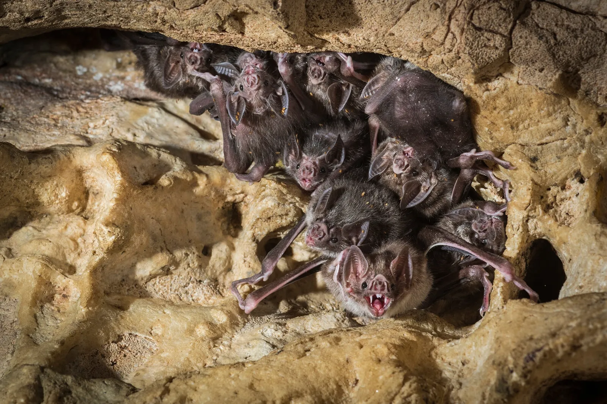
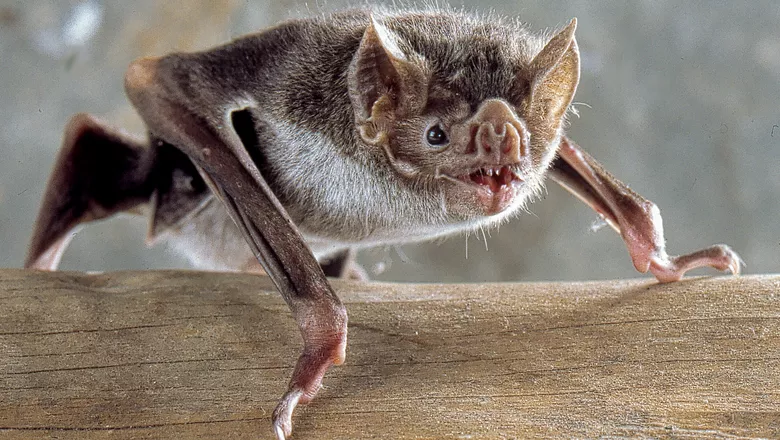
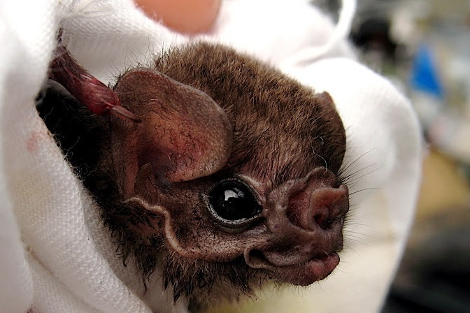
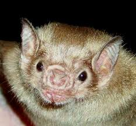

Os morcegos da subfamília Desmondotinae são popularmente conhecidos como morcegos-vampiros. São os únicos mamíferos com dieta exclusivamente hematófoga. De mais de 1400 espécies de morcegos conhecidas, apenas 3 apresentam esse tipo de alimentação.

Desmodus rotundusTambém conhecido popularmente como morcego-vampiro-comum, é a espécie mais conhecida e amplamente distribuída. Ela se destaca por sua adaptabilidade e por ser o mais sociável.

Diphylla ecaudataO morcego-vampiro-de-pernas-peludas é uma das espécies menos conhecidas do grupo, identificado pela presença de pelos nas patas traseiras. Ele possui hábitos hábitos mais reservados.

Diaemus youngiO morcego-vampiro-de-asas-brancas é uma espécie mais discreta, reconhecida pelas bordas claras nas asas. É encontrado em regiões tropicais e ainda é relativamente pouco estudado.